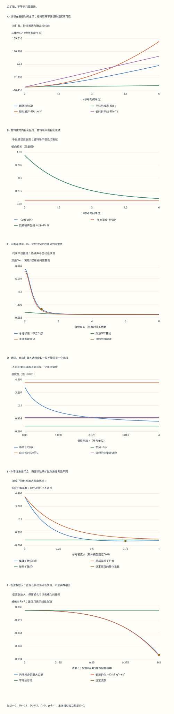

本页目录
非平衡统计 III · 主动物质、方向记忆与集体失稳
粒子靠内部供能前进，为什么最后仍可能像布朗运动？看到更大的扩散系数，为什么还不能说它只是“更热”？
前置路线：涨落与路径热力学 → Kubo响应与有限记录 → 本课；连续场部分使用连续介质与守恒。
完成后应能：从方向相关推导位移统计，判断弹道区间是否可见，分别计算自由扩散、受约束涨落与力响应，并区分单粒子运动和集体闭合模型的线性失稳。
1. 三个问题，需要三组模型
第一组是稀薄、无限平面中的自由主动布朗粒子（ABP），回答“位置怎样变化”。第二组把同样的粒子放入无取向力矩的谐阱，回答“涨落和小外力响应是否符合一个温度”。第三组另设非手性的密度—极化连续模型，回答“密度扰动是否增长”。后者需要关于密度如何改变运动速度的额外假设，不能从一条单粒子MSD曲线自动推出。
选固定参考长度、时间和能量作单位，令 \(k_B=1\)。速度 \(v\)、平移扩散 \(D_t\)、旋转扩散 \(D_r\)、恒定角速度 \(\Omega\) 分别具有长度/时间、长度平方/时间、时间倒数、时间倒数的量纲。迁移率 \(\mu\) 的量纲是长度平方/(能量×时间)，因此 \(D_t/\mu\) 是温度。实验标签的“×10”表示整数读数除以10才得到实际参考量。
主动粒子的供能可以来自燃料反应、马达或外部振动。但下面的运动方程没有显式描述这些能源。它能够检验位移和响应，却不足以单独给出燃料消耗率或完整熵产生；后者还需要能量账本和明确的时间反演约定。
2. 朝向怎样记住过去
自由粒子的模型为
平移与旋转噪声相互独立。角度可以绕过任意多圈；计算角位移统计时使用未折回的角度，计算方向时才取正弦、余弦。初始方向均匀分布，所以各向同性系综的平均位移为零。
角增量是均值 \(\Omega t\)、方差 \(2D_rt\) 的高斯变量，其特征函数给出 \(\langle e^{i[\theta(t)-\theta(0)]}\rangle=e^{-D_rt+i\Omega t}\)。 因此方向点积相关为 \(e^{-D_rt}\cos\Omega t\)，正弦交叉相关为 \(e^{-D_rt}\sin\Omega t\)。旋转扩散抹去记忆，恒定转速则让记忆振荡；相关变成负数并不是概率为负。
练习1：反向旋转，哪些量改变符号？
把 \(\Omega\) 改为 \(-\Omega\)，余弦相关不变，正弦交叉相关反号。若指定初始方向沿 \(x\) 轴，则 \(\langle x(t)\rangle=v\int_0^t e^{-D_rs}\cos\Omega s\,ds\)， \(\langle y(t)\rangle=v\int_0^t e^{-D_rs}\sin\Omega s\,ds\)； 前者不变，后者反号。
这里是“给定初始方向后，许多粒子的平均位置”，不是一条真实随机轨迹。若再平均所有初始方向，两个平均位置都为零，MSD仍然可以很大。
3. 从方向相关到完整MSD
位移是主动速度的时间积分，再加独立平移噪声。把双重时间积分按时间差重排，得到
第二行在 \(z\ne0\) 时使用；\(z=0\) 取第一行的连续极限。无手性时 \(\Omega=0\)，回到 \(4D_tt+2v^2(D_rt-1+e^{-D_rt})/D_r^2\)。
计算很短时间的位移时，直接相减接近的指数会损失有效数字。本实验在小 \(|zt|\) 时对积分展开，保留直线与圆周边界的解析表达。图中同时画短时展开和长时斜率线，故意让它们在适用范围以外暴露误差；它们不是第二条“精确答案”。
练习2：为什么前面的系数是2，而热项是4？
主动项来自 \(v^2\int_0^tdu\int_0^t ds\,\langle\mathbf p(u)\cdot\mathbf p(s)\rangle\)。 方向相关只依赖 \(|u-s|\)，正方形时间区域的两个三角形相同，故得到 \(2v^2\int_0^t(t-s)C(s)ds\)。方向的点积已经包含两个空间分量，不能再乘一个二维因子。
热噪声则在每个分量给方差 \(2D_tt\)，两分量相加为 \(4D_tt\)。当 \(D_r=\Omega=0\)，积分为 \(t^2/2\)，主动项正好是 \(v^2t^2\)。
4. “短时有弹道项”不等于“越短越容易看见”
短时展开为 \(\mathrm{MSD}=4D_tt+v^2t^2+O(t^3)\)。当 \(D_t>0\) 时，严格的 \(t\to0\) 极限由热项主导：主动项与热项之比约为 \(v^2t/(4D_t)\)，随时间缩短而减小。
想看见由主动项主导的弹道区间，需要同时满足
为零的速率对应无穷大的上限；\(v=0\) 时没有主动弹道窗口。左右尺度如果靠得太近，就未必存在清晰的 \(t^2\) 区间。本实验列出尺度比，但不武断地把某个固定倍数当成“已经看见弹道”的证据。
默认 \(v=2,D_r=0.5,D_t=0.2,\Omega=0\)，下限尺度是0.2，上限尺度是2。两者只相差一个数量级；MSD可能出现过渡，却不保证有很宽的平台。完整表还给出局部指数 \(d\ln(\mathrm{MSD})/d\ln t\)，避免只凭曲线外形猜测。
练习3：比较t=0.01、0.1和0.5，主动项是否越来越清楚？
用短时展开，三个时刻的主动/热比分别约为0.05、0.5、2.5。缩到更短时间会使热项更占优势。到 \(t=0.5\)，精确主动项约0.921625，热项0.4，总MSD约1.321625，主动/热比约2.304，比短时估计2.5略低。
还必须检查测量下限。相机曝光、定位误差和有限采样间隔会改变最短可用时间；增加帧率并不会自动消除这些因素，也不能创造原本不存在的尺度分离。
5. 慢慢转向、持续直行和确定性圆周不是同一个极限
当 \(D_r>0\)，方向相关可积，长时扩散系数为
无手性时主动贡献为 \(v^2/(2D_r)\)。恒定旋转让粒子更容易绕回原位，因此在固定 \(D_r,v\) 时抑制长时主动扩散。
\(D_r=0,\Omega=0,v>0\) 时主动位移始终是直线弹道，没有有限的长时扩散系数。\(D_r=0,\Omega\ne0\) 时方向仍在确定性旋转，主动MSD反而有界： \(4v^2\sin^2(\Omega t/2)/\Omega^2\)。 此时总MSD的长时线性斜率仍由 \(D_t\) 决定。不能把“没有转向噪声”误读成“没有转向”。
练习4：哪些极限可以交换？
先令 \(\Omega=0\) 并对每个正 \(D_r\) 取 \(t\to\infty\)，得到 \(D_{\rm act}=v^2/(2D_r)\)，再令 \(D_r\to0\) 会发散。先令 \(D_r=0\)，则需要同时区分 \(\Omega=0\) 的直线和 \(\Omega\ne0\) 的圆周。
保持非零 \(\Omega\)、令 \(D_r\to0\)，主动长时扩散趋于0，与圆周边界相容；但圆周位移保留时间振荡，不能把长时斜率为0解释为粒子静止。实验保留这些状态，不用一个很小的正数替换零速率。
6. 把粒子放进谐阱：位置不再无限扩散
令势能 \(U=k|\mathbf r|^2/2\)，阱不对朝向施加力矩。位置方程多出漂移 \(-\mu k\mathbf r\)。记 \(\lambda=\mu k\)，单坐标的稳态方差为
第一项是热浴贡献，第二项是主动推进与陷阱筛选方向记忆的共同结果。它是这个线性约束模型的精确二阶矩；ABP的单位向量朝向并非高斯过程，方差正确不表示整个位置分布为高斯。
若 \(D_r=0\)，仍可指定初始角度均匀分布的平稳系综；但此时没有唯一的角度混合过程，单个粒子的长时行为与整个系综平均必须区分。完整记录显式写明这一点。
练习5：不求完整概率分布，怎样得到方差？
记 \(m=\langle\mathbf r\cdot\mathbf p\rangle\)、 \(n=\langle r_xp_y-r_yp_x\rangle\)。稳态矩方程为 \(0=v-(\lambda+D_r)m-\Omega n\)、 \(0=\Omega m-(\lambda+D_r)n\)，所以 \(m=v(\lambda+D_r)/[(\lambda+D_r)^2+\Omega^2]\)。
再对 \(|\mathbf r|^2\) 使用Itō公式： \(0=-2\lambda\langle|\mathbf r|^2\rangle+2vm+4D_t\)。 各向同性给 \(\operatorname{Var}(x)=\langle|\mathbf r|^2\rangle/2\)，即正文公式。
默认 \(\mu=k=1\)，得到热方差0.2、主动方差 \(4/(2\times1.5)=1.333333\)，总方差1.533333。于是 \(k\operatorname{Var}(x)=1.533333\)，与自由扩散读数 \(D_{\rm eff}/\mu=4.2\) 已经不同。
7. 力响应与频谱：真正比较FDT的两边
对不改变朝向动力学的小外力 \(f_x\)，均值满足 \(d\langle x\rangle/dt=-\lambda\langle x\rangle+\mu f_x\)。 采用 \(e^{+i\omega t}\) 的傅里叶变换，响应为 \(\chi(\omega)=\mu/(\lambda-i\omega)\)。
当 \(D_r>0\)，单坐标的双边位置谱为
被动极限 \(v=0\) 满足 \(S_{xx}=2T\,\operatorname{Im}\chi/\omega\)，其中 \(T=D_t/\mu\)。主动部分额外带有频率结构。实验定义温度型读数 \(T_{\rm spec}(\omega)=\omega S_{xx}/[2\operatorname{Im}\chi]\)； 它一般依赖频率，而 \(k\operatorname{Var}(x)\) 一般依赖阱刚度。零频读数取连续极限，不直接计算 \(0/0\)。
练习6：同一组默认参数，为什么出现0.2、4.2、1.533333和1？
热浴温度固定为 \(D_t/\mu=0.2\)。自由长时扩散增加主动贡献4，故扩散读数为4.2。谐阱对低频运动施加约束，上一题给方差读数1.533333。
无手性时， \(T_{\rm spec}(\omega)=D_t/\mu+v^2D_r/[2\mu(D_r^2+\omega^2)]\)。 取 \(\omega=1\)，得到 \(0.2+2/(2\times1.25)=1\)；高频时主动部分趋于0，读数回到0.2。这些数描述不同观测，不是四个彼此矛盾的真实热浴温度。
即使某个频率恰好与另一个读数相同，也不能仅凭一个数宣布详细平衡；应比较一段频率和明确的响应对象。
8. 没有旋转扩散时，必须保留离散谱线
当 \(D_r=0\)，不能把上一节的洛伦兹谱逐点代入0后就丢掉主动方差。非零 \(\Omega\) 时，主动位置相关是确定性振荡，谱包含两条 \(\delta\) 线：
两条系数之和除以 \(2\pi\)，正好恢复主动方差 \(v^2/[2(\lambda^2+\Omega^2)]\)。\(\Omega=0\) 时两条线合并，零频线系数为 \(\pi v^2/\lambda^2\)。这代表均匀初始方向下随机的静态偏置，不能当作连续密度的一个有限高度。
热噪声仍有连续谱 \(2D_t/(\lambda^2+\omega^2)\)。实验的谱图只画连续部分，所有主动 \(\delta\) 系数单列在表中；存在主动离散谱时，“完整谱温度读数”保存为不适用。若给谱线加入展宽，必须另外说明仪器窗口或真实的去相干机制。
9. 从单粒子走到集体：先写出额外假设
下面单独取 \(\Omega=0\)，以 \(\rho\) 表示按参考密度归一化的局部密度，\(\mathbf P\) 表示极化密度。假设有效游动速度为 \(v(\rho)=v_0e^{-s\rho}\)，以此表示密度增加时运动减速。它是输入的构成关系，不是本页模拟碰撞后测得的规律。
截断角度分布的高阶矩，并加入明确的稳定梯度项，采用
\(\kappa>0\) 具有长度四次方/时间的量纲，是本模型另加的现象学系数。上述闭合并非微观ABP方程在任意密度、波长下的精确等价。它提供一个可以完整计算、也可以检验失效的中间层。
练习7：密度和极化的两个本征值怎样算？
在均匀态 \(\rho_0,\mathbf P=0\) 附近，取沿 \(x\) 的傅里叶扰动。记 \(v=v(\rho_0)\)、\(A=v+\rho_0v'\)，并令 \(U=i\,\delta P_x\)，则 \((\delta\rho,U)\) 的演化矩阵是 \(\begin{pmatrix}-D_tq^2-\kappa q^4&-qv\\qA/2&-D_r-D_tq^2\end{pmatrix}\)。
设对角元为 \(a,d\)，非对角元为 \(b,c\)，两个本征值为 \((a+d)/2\pm\sqrt{(a-d)^2/4+bc}\)。根号内可以为负，此时必须保留共轭振荡频率，不能把负数截成0。增长与衰减由实部判断。
\(q=0\) 时本征值为0和 \(-D_r\)：前者来自密度守恒，后者是极化松弛。本实验保留矩阵、两个复本征值及完整0至4波数扫描，图中放大低波数部分以看清小增长率。
10. 消去极化以后，哪些结论仍有条件？
当 \(D_r>0\)，并且变化慢、波长长到极化可以先松弛，近似令 \(\partial_t\mathbf P=0\)。最低阶得到
\(D_{\rm coll}<0\) 表示这个约化模型的长波线性不稳定；局部单粒子扩散 \(D_t+v^2/(2D_r)\) 却始终为正。区别来自速度随密度变化产生的反馈，而不是“单个粒子出现负扩散”。
仅有 \(v'<0\) 不够。对指数减速，\(v+\rho v'=v(1-s\rho)\)，即使 \(s\rho>1\)，热扩散也可能足以稳定均匀态。\(D_r=0\) 时没有可先消去的角度松弛间隙，实验保留完整两场矩阵，但将这个约化系数记为不适用。
练习8：把v0从2增到4，默认密度为何从稳定转为失稳？
默认 \(\rho=0.75,s=2,D_r=0.5,D_t=0.2\)。当 \(v_0=2\)，局部速度 \(v=2e^{-1.5}\)，所以 \(D_{\rm coll}=0.2-2e^{-3}\approx0.100426\)，长波稳定。 当 \(v_0=4\)，主动反馈扩大为原来的4倍， \(D_{\rm coll}=0.2-8e^{-3}\approx-0.198297\)。
约化式给最大增长波数 \(q_*=\sqrt{-D_{\rm coll}/(2\kappa)}\)，但它只是约化式的极值。完整两场模型的极化并非瞬时响应，增长峰的位置和大小可以不同；实验同时给两者，并通过 \(q\to0\) 的扫描检查 \(-\operatorname{Re}\lambda_{\rm slow}/q^2\to D_{\rm coll}\)。
这仍没有算出共存密度、团簇大小或非线性饱和。要把线性失稳发展为可信的相分离预测，还必须检查高阶梯度、非线性、涨落以及构成关系是否适用。
11. 怎样把本页变成可执行的测量方案
先测方向，而不只拟合MSD：用未折回角度的均值斜率估计 \(\Omega\)，用角位移方差斜率估计 \(2D_r\)。再比较方向相关的余弦振荡与指数衰减。用短时位移和定位误差模型分辨 \(v,D_t\)，最后拿这些参数预测另一段时间的MSD；避免用同一条曲线同时拟合并宣称独立验证。
接着施加弱外力、改变谐阱刚度，分别测响应和位置谱。记录曝光时间、采样间隔和观测总长，并回到有限记录的Kubo实验处理窗外信息。若观察到尖锐谱线，应报告有限窗口的展宽方式，不能直接把峰高当作 \(\delta\) 权重。
集体实验则需要额外测量 \(v(\rho)\)、极化松弛和密度扰动的增长率。先用独立密度区间验证构成关系，再检验增长谱，最后才讨论相分离。边界压力也不能由 \(D_{\rm eff}\) 普遍确定：无力矩等特殊模型可有状态方程，一般的粒子—壁面取向耦合会改变机械压力。
无脚本对照：六份记录完整保留位移与方向、谐阱矩、频率扫描、离散谱权重、全部密度和波数、本征值及适用边界。系综均值不是单粒子轨迹，线性失稳不是共存相图。

| 预设 | 观察末MSD | 扩散温度读数 | 谐阱温度读数 | 完整谱选频读数 | δ谱线数 | 集体系数Dcoll |
|---|---|---|---|---|---|---|
| default | 70.393186 | 4.2 | 1.5333333 | 1 | 0 | 0.10042586 |
| passive | 4.8 | 0.2 | 0.2 | 0.2 | 0 | 0.2 |
| straight | 148.8 | 不适用 | 2.2 | 不适用 | 1 | 不适用 |
| circle | 5.1186377 | 0.2 | 1.2 | 不适用 | 2 | 不适用 |
| chiral | 27.727658 | 1 | 1.1230769 | 2.3176471 | 0 | 0.10042586 |
| spinodal | 267.17274 | 16.2 | 5.5333333 | 3.4 | 0 | -0.19829655 |
下载六份完整记录。默认热浴温度为0.2，三种读数却分别为4.2、1.533333和1；这些是不同观测的比值，不是三个额外热浴。
12. 阅读出口：哪些证据已经有，哪些还缺
本页的精确结果覆盖自由ABP的二阶位移和朝向统计，以及指定谐阱中的线性响应与二阶谱。集体部分是明确写出的闭合模型，其本征值可以精确求出，闭合本身却需要验证。完整表和下载记录保留全部扫描及不适用状态，方便复算；插图不冒充实验照片，条件均值不冒充随机轨迹。
离开本页前，尝试不用公式表回答：为什么最短时间未必最像弹道？为什么确定性圆周的主动扩散为零却仍在运动？为什么连续谱图可能漏掉有限的总方差？为什么线性失稳不等于两相共存？隔一天再用另一组参数完成这四问，比记住一个 \(D_{\rm eff}\) 更能检验理解。
进一步阅读：Zhou等的手性主动机器人实验与ABP模型，式1—5提供方向与MSD的可比较观测；Cates与Tailleur的MIPS综述，式31及梯度讨论说明密度减速、热扩散和局部近似；Solon等关于主动物质压力的论文说明壁面相互作用的作用。本文公式通过所写模型自行推导，引用用于核对背景与适用边界。
若使用生成式AI辅助读论文，可以让它列出变量、单位和假设，再用本页可算的极限核验；不能让它把一张“像相分离”的图变成相图证据，也不能让流畅的描述替代独立的响应、涨落和能量测量。